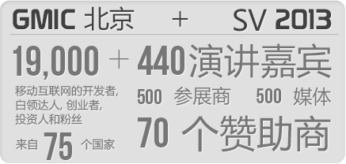
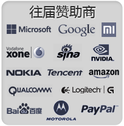
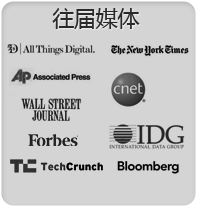

由长城会主办的GMIC 全球移动互联网大会每年分别在全球四大创新之都：北京、硅谷、东京和新德里举办。全球数以万计移动互联网行业最具影响力的企业高管、创新者和开发者济济一堂，与行业领袖共同学习、了解移动互联网技术趋势，深入探讨移动互联网如何积极地改变着世界。
|

往届演讲嘉宾
- Paul GrahamFounder, Y-Combinator
- Hugo BarraVice President, Xiaomi Global
- Andrew NgCo-CEO, Coursera
- Pavel DurovFounder & CEO, VK & Telegram
- Akira MorikawaCEO, LINE
- Dave McClureMP, 500 Startups
- Niklas ZennstromFounder, Skype
- Yang YuanqingCEO, Lenovo
- Osama BedierVP, Google
- 曹国伟CEO, 新浪
- 雷军CEO, 小米
- Phil LibinCEO, Evernote
- 马化腾CEO, 腾讯
- Yuri MilnerFounder, DST Global
- Isao MoriyasuCEO, DeNA
- John RiccitielloCEO, Electronic Arts
- Vaughan SmithVP, Facebook
- Yoshikazu TanakaCEO, Gree
- Naveen TewariCEO, Inmobi
|  |  |  |